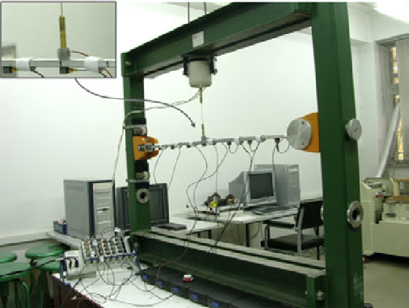

Experimental study on the effect of excitation type on the output-only modal analysis results
Transactions of FAMENA, 43(3), pp.37-52, 2019. Journal Article

Abstract
Output-only Modal Analysis (OMA) has found extensive use in the identification of dynamic properties of structures. This study aims to investigate the effect of excitation force on the accuracy of modal parameters. For this purpose, the modal parameters of a simply supported beam are obtained through the Experimental Modal Analysis (EMA) and the OMA method using three different types of artificial and natural excitations, namely a shaker, acoustic waves and environmental noise. Frequency Domain Decomposition (FDD) technique is used to identify dynamic characteristics. Finally, these results are compared with those obtained by the analytical method and the EMA method. The results demonstrated the following: 1) Acoustic excitation presents the natural frequencies with the smallest errors in comparison with the analytical results. 2) Inaccuracy is observed at certain natural frequencies during the excitation with a shaker with respect to the connecting point between the shaker and the beam. 3) Modal Assurance Criterion (MAC) showed that the mode shapes extracted by the acoustic excitations are more similar to the analytical results.